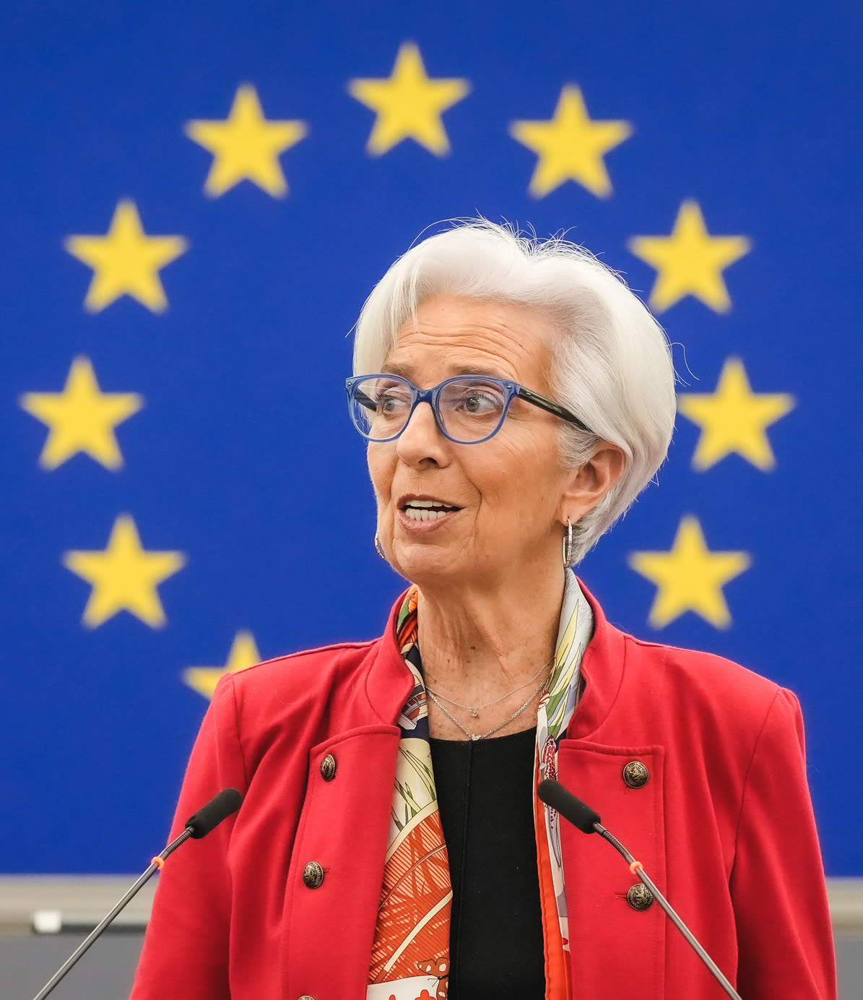

Lagarde lascia la BCE per poter parlare liberamente: lo scudo per i BTP e l'errore ammesso sull'inflazione
Brava sullo spread, in ritardo sui prezzi. E se non si sente più neutrale, non dovrebbe decidere i tassi fino a febbraio.
Redazione Contrappunto · aggiornato il 30.10.2026 · 1 rettifiche


La Banca centrale europea (BCE), a Francoforte, decide quanto costa il denaro nei paesi che usano l'euro, Italia compresa. Lo fa fissando i tassi a cui le banche si finanziano: quando salgono, salgono le rate dei mutui variabili e, più lentamente, gli interessi su conti e titoli; quando scendono, il contrario. Il suo compito principale è tenere l'inflazione vicino al 2%. Dal 1° novembre 2019 la guida Christine Lagarde, avvocata francese, ex ministra dell'Economia ed ex direttrice del Fondo monetario internazionale. Il 29 ottobre 2026 ha annunciato che lascerà il 7 febbraio 2027, nove mesi prima della scadenza, per avere, ha detto, la libertà di parlare anche di ciò che non è politica monetaria. Il successore lo scelgono i governi: secondo l'articolo 283 del Trattato sul funzionamento dell'Unione europea lo nomina il Consiglio europeo, cioè i capi di governo.
Vedi di più: 10 parole spiegate, cosa si racconta
Cosa si raccontaOggi il coro va in due direzioni, tutte e due di rito. Gli elogi: ha salvato l'euro durante il Covid, ha battuto l'inflazione senza far perdere posti di lavoro, ha tenuto unito il Consiglio della BCE (Reuters, France 24/AFP). Le accuse: è arrivata in ritardo sull'inflazione del 2022 ed è stata troppo politica, fino a un'uscita anticipata che molti leggono come un favore a Macron prima delle presidenziali francesi (Milano Finanza, Teleborsa). Tutte e due hanno una parte di vero; nessuna delle due dice chi ha pagato il ritardo. Dopo la conferenza stampa il Giornale e Libero titolano sulla sua frase «non posso più restare neutrale»; France 24 scrive che le sue parole alimenteranno le voci sui suoi piani, in vista delle presidenziali in Francia. [Internazionale] [France 24] [Milano Finanza] [Teleborsa] [il Giornale] [Libero (askanews)] [France 24]
- BCE e Consiglio direttivo
- La Banca centrale europea stampa l'euro e ne decide il costo. Le decisioni le prende il Consiglio direttivo: i sei membri del comitato esecutivo (presidente, vicepresidente e altri quattro) più i governatori delle banche centrali nazionali dell'euro, tra cui quello della Banca d'Italia.
- Tasso sui depositi (e gli altri due tassi)
- La BCE ha tre tassi. Quello sui depositi è l'interesse che paga alle banche che le lasciano soldi: oggi è il tasso guida, quello che muove l'Euribor e quindi i mutui variabili. Il tasso di rifinanziamento principale è quanto chiede alle banche per prestare loro denaro per una settimana; quello marginale è il prestito d'emergenza per una notte, il più caro.
- Punti base
- Un punto base è un centesimo di punto percentuale: 25 punti base = 0,25%. Un rialzo di 450 punti base vuol dire tassi più alti di 4,5 punti.
- Spread
- La differenza tra il rendimento dei titoli di Stato italiani a dieci anni (BTP) e quelli tedeschi (Bund), in punti base. Più è alto, più lo Stato italiano paga di interessi per indebitarsi: è il termometro della fiducia dei mercati nei conti pubblici.
- PEPP
- Programma di acquisto per l'emergenza pandemica: dal marzo 2020 la BCE ha comprato titoli pubblici e privati per tenere bassi i tassi durante il Covid, fino a 1.850 miliardi. Era flessibile per paese: poteva comprare più titoli italiani quando servivano.
- TPI, lo scudo anti-spread
- Strumento di protezione della trasmissione, creato a luglio 2022: permette alla BCE di comprare i titoli di un paese se lo spread sale senza ragioni giustificate dai suoi conti, a certe condizioni. Non risulta mai usato.
- Inflazione IPCA e NIC
- L'inflazione è quanto aumentano i prezzi in un anno. L'Istat la misura con più indici. L'IPCA è quello armonizzato europeo, uguale in tutta l'Ue e usato dalla BCE; il NIC è quello nazionale. Danno numeri un po' diversi perché trattano diversamente saldi, promozioni e farmaci.
- Obiettivo del 2% simmetrico
- La BCE punta a un'inflazione del 2% nel medio periodo e considera ugualmente indesiderati gli scarti sopra e sotto quella soglia.
- Articolo 283 TFUE
- L'articolo del Trattato sul funzionamento dell'Unione europea che regola la nomina del vertice BCE: il Consiglio europeo decide a maggioranza qualificata, su raccomandazione del Consiglio Ue (i ministri), sentiti il Parlamento europeo e il Consiglio direttivo della BCE. Il mandato dura otto anni e non si rinnova.
- Obbligo di neutralità
- Chi siede nel Consiglio direttivo della BCE parla solo di politica monetaria e non prende posizione nelle contese politiche: secondo Lagarde è «il prezzo che paghiamo per essere indipendenti» dai governi.
- Christine Lagarde lascerà la BCE il 7 febbraio 2027, nove mesi prima della scadenza: vuole la libertà di parlare e dice di non poter più restare neutrale.
- Oggi la BCE ha anche lasciato fermi i tassi, con il deposito al 2,50%.
- Nel bilancio: il programma anti-Covid, lo scudo anti-spread e l'errore sull'inflazione del 2022, ammesso da Lagarde nel 2024.
Ora si sa perché se ne va. Il comunicato tace, ma in conferenza stampa Lagarde ha detto di volere la libertà di parlare, anche di ciò che non è politica monetaria: in questo momento non pensa di poter restare neutrale. Su Francia, candidature e tempi non è entrata nel merito. Intanto i bilanci sono due: per Reuters e France 24 ha salvato l'euro e battuto l'inflazione, per Milano Finanza e Teleborsa è arrivata tardi ed è stata troppo politica. Nessuno dice chi ha pagato. [1] [69] [7] [4] [8] [63]
Il buono. Nel 2020, dopo una frase sbagliata sullo spread, ha corretto il tiro e comprato titoli fino a 1.850 miliardi: i BTP hanno retto il Covid. Nel 2022 ha creato lo scudo anti-spread, mai usato. E ha riportato l'inflazione al 2% senza far salire la disoccupazione. [18] [21] [31]
Il cattivo. Nel 2021 la BCE chiamava i rincari «temporanei». Il primo rialzo è arrivato a luglio 2022; a ottobre l'inflazione nell'area euro era al 10,6%. Lo ha ammesso lei stessa nel 2024: «we got that wrong», abbiamo sbagliato. [22] [26] [25]
E quel ritardo non l'hanno pagato tutti allo stesso modo. Nel 2022 le famiglie più povere hanno avuto un'inflazione dell'11,6%, le più ricche del 7,6%. Chi aveva un mutuo variabile ha pagato due volte: prima la spesa, poi la rata. Lo Stato, secondo noi, ci ha guadagnato: con i prezzi più alti il debito è sceso al 134,8% del PIL. [52] [47] [54]
Poi c'è la neutralità. Lagarde stessa la chiama «il prezzo che paghiamo per essere indipendenti». Ha ragione, ed è il metro che usiamo per i giudici: chi decide per tutti non si schiera, e se vuole schierarsi prima lascia. Lei lascia, e va riconosciuto. Ma resta fino al 7 febbraio e presiede altre due riunioni sui tassi, con un rialzo possibile a dicembre e le presidenziali francesi in arrivo. Ogni sua decisione sarà letta con quel sospetto. [69] [9] [70]
Il nostro giudizio: brava a spegnere gli incendi, in ritardo sui prezzi, onesta a metà sull'uscita. Chi non si sente più neutrale lascia la sedia subito, non dopo due riunioni. E sul successore, che i governi si spartiscono a pacchetto, guardate chi tratta. [69] [12] [16]
La verifica punto per punto26 passaggi, 73 fonti
Qui sotto ogni cosa scritta sopra, una per una, con le fonti. Confermato: lo dice un documento originale o più fonti lette. Plausibile: lo riportano fonti serie, ma non abbiamo letto l'originale. Discordante: le fonti danno numeri diversi, e diciamo quali. Ipotesi e Opinione sono il nostro ragionamento, separato dai fatti.
L'annuncio: cosa sappiamo
Oggi la BCE ha comunicato che Christine Lagarde lascerà la presidenza il 7 febbraio 2027, nove mesi prima della fine del mandato di otto anni. Il comunicato non dà motivazioni.
In un video Lagarde dice: «Lascio questa istituzione con un senso di buon lavoro fatto e una Bce pronta per il futuro».
In conferenza stampa Lagarde ha spiegato che vuole «libertà di parola, libertà di espressione» e di occuparsi d'altro che di politica monetaria. Chi guida la BCE ha un obbligo di neutralità, «il prezzo che paghiamo per essere indipendenti», e lei ora non pensa di poter restare neutrale. Resta in carica fino al 7 febbraio: presiederà le riunioni di dicembre e febbraio.
Alle domande su Francia, candidature, incarichi al Consiglio o al Parlamento europeo e sull'indipendenza della BCE con un'uscita all'inizio di un anno elettorale, non è entrata nel merito. Ha parlato di principi da difendere «in molte parti del mondo, non solo in Europa».
Oggi la BCE ha lasciato fermi i tassi: 2,50% sui depositi, 2,65% e 2,90% sugli altri due. I mercati scommettono su un rialzo a dicembre.
A giugno 2025 Lagarde aveva escluso l'uscita anticipata; a febbraio 2026 la BCE rispose che nessuna decisione era stata presa. A luglio, a Les Echos, Lagarde ammise che era possibile.
Il successore lo nominano i governi. Favoriti l'olandese Klaas Knot e lo spagnolo Pablo Hernández de Cos. Nel 2027 lasciano anche Isabel Schnabel e Philip Lane.
Il buono · 2020, Covid e spread
Il 12 marzo 2020 Lagarde disse che ridurre gli spread non era compito della BCE: lo spread salì di oltre 60 punti, Piazza Affari perse il 16,9%. Poi corresse il tiro e lanciò il PEPP: 750 miliardi, poi 1.850.
Il cattivo · 2021-22, l'inflazione arrivata prima dei rialzi
Nel 2021 la BCE fissò l'obiettivo al 2% simmetrico e chiamò temporanei i rincari; a novembre Lagarde giudicò improbabile un rialzo nel 2022, secondo CNBC. Nel 2024 ha ammesso: «we got that wrong», abbiamo sbagliato.
A ottobre 2022 l'inflazione dell'area euro toccò il 10,6%, il massimo dalla nascita dell'euro (Eurostat).
In Italia 12,8% o 11,9%? Tutti e due, nella stima flash dell'Istat: sono due indici, l'IPCA europeo usato dalla BCE e il NIC nazionale, che trattano diversamente saldi e farmaci.
Il primo rialzo arrivò il 21 luglio 2022, dopo 11 anni. In tutto furono dieci: a settembre 2023 deposito al 4%, 450 punti base in 14 mesi, mai così veloce.
Il buono · lo scudo e la discesa dei prezzi
Lo stesso giorno nacque lo scudo anti-spread (TPI), mai attivato secondo le fonti. Lo spread, circa 250 punti a settembre 2022, è sceso a circa 70 a fine 2025; ora è sui 115-124.
Da giugno 2024 a giugno 2025 otto tagli, con una pausa a luglio 2024: deposito al 2%. A dicembre 2025 inflazione all'1,9%; a maggio 2026 disoccupazione al 6,2%, minimo storico.
Oggi · la guerra e i conti della BCE
Nel 2026 la guerra tra Stati Uniti e Israele da una parte e Iran dall'altra, con la chiusura dello Stretto di Hormuz, ha fatto salire petrolio e gas. La BCE ha rialzato a giugno e settembre; a settembre l'inflazione era al 3,8%.
I rialzi hanno un rovescio: la BCE ha perso 1,3 miliardi nel 2023 e 7,9 nel 2024, soprattutto per gli interessi pagati alle banche.
Chi ha pagato e chi ci ha guadagnato
Sui vecchi mutui variabili la rata è salita del 70-75% tra 2022 e 2023 per la FABI, del 36% in media per il CRIF. A giugno 2026 i depositi rendevano in media lo 0,67%, l'inflazione oltre il 3%.
Nel terzo trimestre 2022 i più poveri avevano un'inflazione dell'11,6%, i più ricchi del 7,6% (Istat). A inizio 2025 i salari reali erano il 7,5% sotto il 2021: il calo peggiore dell'OCSE.
Nel 2023 il debito pubblico italiano è sceso al 134,8% del PIL, soprattutto perché i prezzi hanno gonfiato il PIL.
Chi la critica
Economisti tedeschi come Volker Wieland e Hans-Werner Sinn l'accusano di essere arrivata tardi. E per il FMI i profitti delle imprese spiegano il 45% dei rincari dal 2022.
Nel 2023 Giorgia Meloni criticò la «semplicistica ricetta dell'aumento dei tassi».
Il nostro ragionamento
Cosa ha fatto di buono. Dopo l'errore del 2020, PEPP e scudo hanno tenuto i BTP lontani da una crisi del debito; la stretta ha riportato l'inflazione al 2% senza disoccupazione.
Ragionamento: I fatti sono nei blocchi 8, 13 e 14; il FMI nel 2024 ha parlato di gestione abile della politica monetaria (fmi-2024). Che la disoccupazione non sia salita è un dato; quanto il merito sia della BCE è un'inferenza, per questo la fiducia è media. Lo spread sceso fin verso i 70 punti senza mai usare lo scudo fa pensare che la sola minaccia abbia contato.
Cosa ha fatto di male. Il ritardo del 2021-22 è stato una tassa mai votata da un Parlamento, pagata da famiglie povere, stipendi e risparmi sul conto. Lo Stato debitore, a nostro avviso, ci ha guadagnato: l'inflazione ha alleggerito il debito.
Ragionamento: Alta la fiducia sui fatti: la frase del dicembre 2021 (blocco 9), il primo rialzo a luglio 2022 (blocco 12), l'inflazione più alta per i poveri e i salari reali in calo (blocco 18), il debito/PIL sceso per effetto dei prezzi (blocco 19, Mazziero Research). Che lo Stato ci abbia guadagnato è una nostra inferenza, condivisa dall'Avvocato del diavolo: il calo del debito/PIL c'è, ma la spesa per interessi ora risale. Media sull'attribuzione: lo shock veniva dall'energia, non sappiamo quanta inflazione un rialzo anticipato avrebbe evitato, e un'inflazione da energia si frena solo in parte con i tassi.
Perché esce prima ora lo dice lei: per parlare liberamente. Di cosa e per chi, no; il Financial Times lo lega alle presidenziali francesi. Per noi conta altro: i vertici BCE si spartiscono tra governi, a pacchetto. Chi controlla chi nomina?
Ragionamento: La ragione dell'uscita è nelle parole di Lagarde in conferenza stampa (blocco 3, trascrizione BCE); a cosa si riferisca non lo ha detto (blocco 4). Il legame con Macron e le presidenziali è una ricostruzione del Financial Times (febbraio 2026, ripresa da Euronews: euronews-ft-2026), non una dichiarazione; altre ricostruzioni parlano del World Economic Forum (bloomberg-wef) o delle sue memorie (swissinfo-memorie). Il pacchetto si deduce dalle uscite ravvicinate di Lagarde, Schnabel e Lane e dai candidati sostenuti dai governi (blocco 7); già a febbraio si avvertiva di non mettere a rischio l'indipendenza della BCE (teleborsa-indip). Fiducia alta sul tempismo, media sull'interpretazione.
Stesso metro per i critici italiani: volevano tassi bassi e scudo per i BTP, cioè meno interessi per lo Stato, e hanno incassato il calo del debito. Chi difende il risparmio dovrebbe volere una BCE più severa.
Ragionamento: Le dichiarazioni sono nel blocco 21, l'effetto dell'inflazione sul debito nel blocco 19, il costo per salari e depositi nei blocchi 17 e 18. L'incoerenza è un'inferenza: chi criticava i rialzi poteva temere anche la recessione.
Il nostro giudizio: brava a spegnere gli incendi, in ritardo sui prezzi. Uscire per parlare è giusto, lo chiediamo anche ai giudici. Ma chi non si sente più neutrale non dovrebbe decidere i tassi per altri tre mesi.
Fonti73, tutte con il link
- ECB President Lagarde to step down on 7 February 2027 (Banca centrale europea) · consultata il 29.10.2026
- Lagarde si dimette dalla Bce dal 7 febbraio 2027 (ANSA) · consultata il 29.10.2026
- ECB President Christine Lagarde to step down in February 2027, nine months before term ends (France 24) · consultata il 29.10.2026
- Christine Lagarde: unifying ECB chief in turbulent times (France 24) · consultata il 29.10.2026
- Christine Lagarde si dimette dalla Bce: «È stato un onore». L’assist a Macron e il posto pronto a Ginevra: cosa succede ora – Il video (Open) · consultata il 29.10.2026
- Bce, Lagarde “Lascio istituzione solida e pronta per il futuro” (Italpress) · consultata il 29.10.2026
- Christine Lagarde: The outsider who led the ECB her way (Internazionale) · consultata il 29.10.2026
- Bce, Lagarde lascia la presidenza dal 7 febbraio. Ecco i candidati alla successione (Milano Finanza) · consultata il 29.10.2026
- ECB keeps rates unchanged but points to mounting inflation risk (Global Banking and Finance) · consultata il 29.10.2026
- ECB holds key interest rates steady, deposit rate remains at 2.50% (Sweden Herald) · consultata il 29.10.2026
- Lagarde Determined to Finish ECB Term After WEF Speculation (Swissinfo) · consultata il 29.10.2026
- ECB says 'no decision made' on Lagarde's potential early exit amid reports (Euronews) · consultata il 29.10.2026
- «Lagarde lascerà la Bce prima per consentire a Francia e Germania di scegliere il successore» (Open) · consultata il 29.10.2026
- Bce, Lagarde apre a uscita anticipata e difende rialzo tassi (Teleborsa / Borsa Italiana) · consultata il 29.10.2026
- ECB Executive Board: appointment procedure (infografica) (Consiglio dell'Unione europea) · consultata il 29.10.2026
- BCE, corsa aperta per il post Lagarde: i favoriti restano de Cos e Knot (Teleborsa) · consultata il 29.10.2026
- Eurogroup opens race to replace Schnabel on ECB board (Brussels Signal) · consultata il 29.10.2026
- Perché le parole di Christine Lagarde sono diventate un problema (Il Post) · consultata il 29.10.2026
- Spread, un anno fa la gaffe di Lagarde: da allora è cambiato tutto (Sky TG24) · consultata il 29.10.2026
- Pandemic Emergency Purchase Programme (PEPP) (Banca d'Italia) · consultata il 29.10.2026
- Pandemic emergency purchase programme (PEPP) (Banca centrale europea) · consultata il 29.10.2026
- ECB press conference - introductory statement (8 luglio 2021) (BIS / Banca centrale europea) · consultata il 29.10.2026
- ECB's Lagarde says a rate hike unlikely for 2022 (CNBC) · consultata il 29.10.2026
- Bce, anche il Parlamento Europeo boccia l’operato di Christine Lagarde e chiede un cambio di marcia (Milano Finanza) · consultata il 29.10.2026
- IMF / Lagarde lecture global economy (20 settembre 2024) (UN Web TV) · consultata il 29.10.2026
- Eurozona, a ottobre inflazione al 10,6 per cento. In Italia schizza al 12,6 per cento (Eunews) · consultata il 29.10.2026
- Italia: Inflazione alle stelle (Intesa Sanpaolo Research) · consultata il 29.10.2026
- Il sistema dei prezzi al consumo (Istat) · consultata il 29.10.2026
- ECB makes first rate hike in 11 years to contain inflation (bne IntelliNews) · consultata il 29.10.2026
- La decisione della BCE: tassi d’interesse invariati dopo dieci aumenti consecutivi (Edilizia.com) · consultata il 29.10.2026
- La BCE vara il suo scudo anti-spread, ma per l’Italia può essere difficile afferrarlo (Eunews) · consultata il 29.10.2026
- Lo spread resta sotto 240 punti: stranamente il TPI della BCE sta funzionando (Investire Oggi) · consultata il 29.10.2026
- Spread BTP-Bund, settembre 2022 (FinanzaOnline) · consultata il 29.10.2026
- BTp: spread con Bund apre in lieve calo a 68 punti, rendimento al 3,50% (Il Sole 24 Ore) · consultata il 29.10.2026
- Spread Btp-Bund risale a 124 punti: cosa dice su rischio Italia (Soldionline) · consultata il 29.10.2026
- Bce taglia i tassi di interesse al 2% sui depositi bancari (Investire Oggi) · consultata il 29.10.2026
- L'inflazione della zona euro scende al di sotto dell'obiettivo della BCE (Trading Economics) · consultata il 29.10.2026
- Eurozona, a maggio disoccupazione stabile al 6,2% (Teleborsa / Borsa Italiana) · consultata il 29.10.2026
- ECB raises interest rates in long-telegraphed move (Kitco / Dow Jones) · consultata il 29.10.2026
- La BCE torna ad alzare i tassi di 25 punti base in linea alle attese (Teleborsa) · consultata il 29.10.2026
- La BCE aumenta i tassi di interesse e rivede al rialzo le previsioni sull'inflazione (Morningstar) · consultata il 29.10.2026
- Inflation in the eurozone accelerated to 3.8% in September (GMK Center) · consultata il 29.10.2026
- Prezzi al consumo (dati provvisori) – Settembre 2026 (Istat) · consultata il 29.10.2026
- Bce verso nuovo rialzo dei tassi: lo shock energetico spinge l'inflazione al 3,3% (Euronews) · consultata il 29.10.2026
- Financial statements of the ECB for 2024 (Banca centrale europea) · consultata il 29.10.2026
- ECB reports record loss for 2023 as rate hikes bite (Kitco) · consultata il 29.10.2026
- Dossier mutui e credito al consumo: l’aumento dei tassi d’interesse decisi dalla Bce e gli effetti sui prestiti alle famiglie (17 giugno 2023) (FABI) · consultata il 29.10.2026
- Mutui, la rata è aumentata del 70% in un anno e mezzo (Money.it) · consultata il 29.10.2026
- Tassi dei mutui ai massimi dal 2014: le rate possono crescere (dati CRIF) (Money.it) · consultata il 29.10.2026
- Mutui, Taeg al 3,95% dopo il rialzo Bce. Bankitalia: prestiti alle famiglie +2,7% (QuiFinanza) · consultata il 29.10.2026
- Salari in Italia, il rapporto OCSE 2025 (Sky TG24) · consultata il 29.10.2026
- Inflazione, per le famiglie più povere i prezzi salgono dell’11,6% mentre per i più abbienti l’impatto si ferma a +7,6%. Ecco perché (Il Fatto Quotidiano) · consultata il 29.10.2026
- Effetto inflazione: in povertà assoluta più di 2 milioni di famiglie (Il Sole 24 Ore) · consultata il 29.10.2026
- Istat: debito pubblico in Italia al 134,8% del Pil nel 2023 (LaPresse) · consultata il 29.10.2026
- Italia economia a fine 2023 (Osservatorio trimestrale, anno XIV n. 1) (Mazziero Research) · consultata il 29.10.2026
- A brown or a green European Central Bank? (Bruegel) · consultata il 29.10.2026
- Volker Wieland and Hendrik Hegemann present study on ECB policy and strategy review (IMFS Frankfurt) · consultata il 29.10.2026
- Hans-Werner Sinn sulla BCE (hanswernersinn.de) · consultata il 29.10.2026
- Europe’s Inflation Outlook Depends on How Corporate Profits Absorb Wage Gains (Fondo monetario internazionale) · consultata il 29.10.2026
- Meloni 'boccia' la cura Bce contro l'inflazione (AGI) · consultata il 29.10.2026
- 'ECB not subjected to political pressure' - Lagarde (ANSA English) · consultata il 29.10.2026
- IMF Executive Board Concludes 2024 Consultation with Euro Area (Fondo monetario internazionale) · consultata il 29.10.2026
- BCE, per uscita Lagarde serve "grande cautela" per non mettere a repentaglio l'indipendenza (Teleborsa) · consultata il 29.10.2026
- Lagarde to Release Memoir in January as ECB Exit Talk Swirls (Swissinfo) · consultata il 29.10.2026
- Lagarde discussed leaving ECB early for WEF, Schwab tells FT (Bloomberg) · consultata il 29.10.2026
- Italy slams ECB for hiking borrowing costs as recession looms (Al Jazeera) · consultata il 29.10.2026
- ECB holds rates at 2.25% as the reignited Iran war keeps a second hike in play (Euronews) · consultata il 29.10.2026
- ECB interest rate hike, Lagarde and Iran (titolo dall'indirizzo del pezzo, 10 settembre 2026) (CNBC) · consultata il 29.10.2026
- Monetary policy statement (with Q&A), 29 ottobre 2026 (Banca centrale europea) · consultata il 30.10.2026
- Lagarde lascia la Bce in anticipo: “Non posso più rimanere neutrale” (il Giornale) · consultata il 30.10.2026
- Bce, Lagarde lascia in anticipo: "Non posso più restare neutrale" (Libero (askanews)) · consultata il 30.10.2026
- ECB President Lagarde steps down in order to speak out (France 24) · consultata il 30.10.2026
- Lagarde si dimette dalla Bce: «Lascio il 7 febbraio 2027» (Domani) · consultata il 30.10.2026
- 30.10.2026: Aggiornamento: il pezzo diceva che non si sapeva perché Lagarde lascia. In conferenza stampa (trascrizione BCE) ha detto di volere la libertà di parlare e di non poter più restare neutrale. Cambiati titolo, sottotitolo, in breve, primo e ultimo paragrafo del pezzo, la riga «Uscita anticipata» della sintesi, l'ipotesi sul perché e il nostro giudizio, che ora lega l'uscita alla nostra regola sull'imparzialità; aggiunti due blocchi (3 e 4) e la trascrizione come fonte primaria. Il bilancio di politica monetaria resta com'era.
Testo preparato con strumenti di intelligenza artificiale e pubblicato senza revisione umana. Come lavoriamo